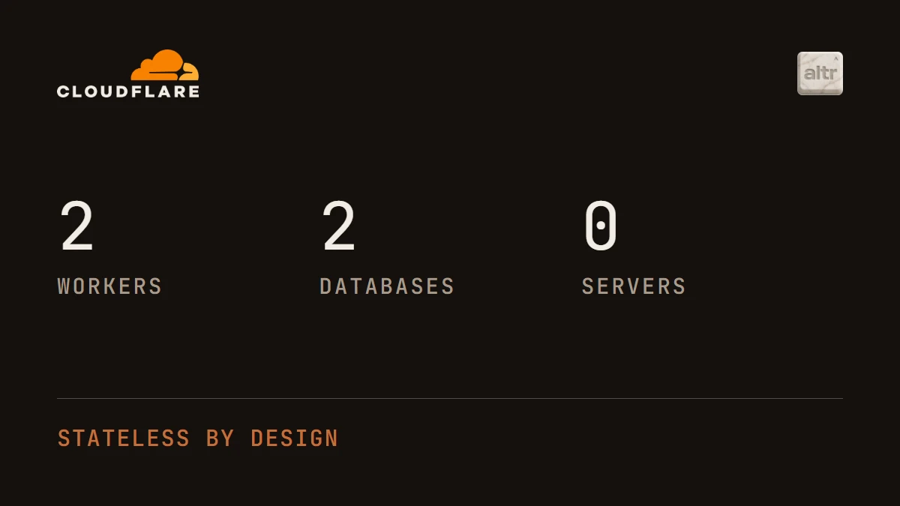

Why we deploy our remote MCP servers on Cloudflare Workers.

Every connector we build for a client is an MCP server, the thing that lets Claude reach their records and answer a real question about their buildings, orders or contracts instead of guessing. They all go to the same place: Cloudflare Workers.
There are two of us, and engineering hours cannot go on babysitting servers. On Workers a connector deploys with one command, wrangler deploy, and is live on a URL in seconds, with nothing to patch and nobody on call. The rest is in the same account: a database is a D1 binding, a nightly job is a cron line, a custom domain is one dashboard setting.
Clients paste a URL into Claude, click connect and sign in through a browser. There is no API key to generate and no token in a config file on somebody’s laptop. Because the connection knows who signed in, the assistant can write as well as read: log the deal, create the contact, produce the document, all as that person.
One deployment can also serve several teams. Our servers hold nothing between requests, so the same server hands out different tools by route: valuation gets valuation tools, capital markets gets recorded debt. Adding a team is a line in a table and a deploy. Hosting is not what makes a connector hard. Getting the records and permissions right is.